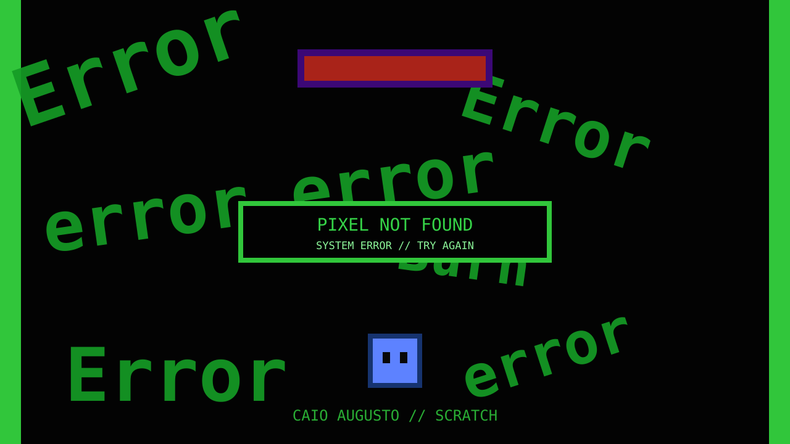

Verde de sistema
Textos, bordas e elementos visuais remetem a terminais e mensagens de falha.
[ ERROR 404: PIXEL FOUND ]
Uma experiência 2D criada no Scratch com estética de falha digital, mensagens de erro e uma identidade visual dominada por preto e verde.

Textos, bordas e elementos visuais remetem a terminais e mensagens de falha.
Palavras quebradas e erros espalhados pelo cenário fazem parte da identidade do jogo.
Formas quadradas e elementos simples reforçam o visual digital e experimental.
Desenvolvedor de Pixel Not Found.